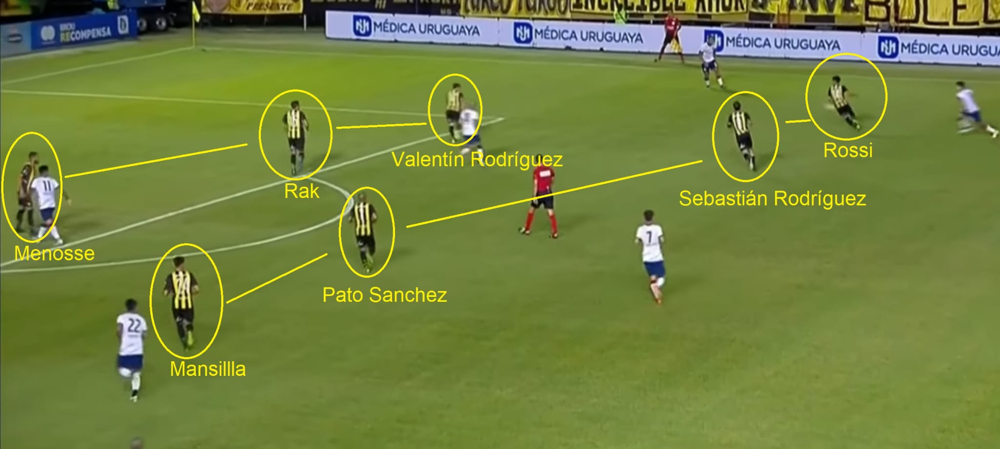
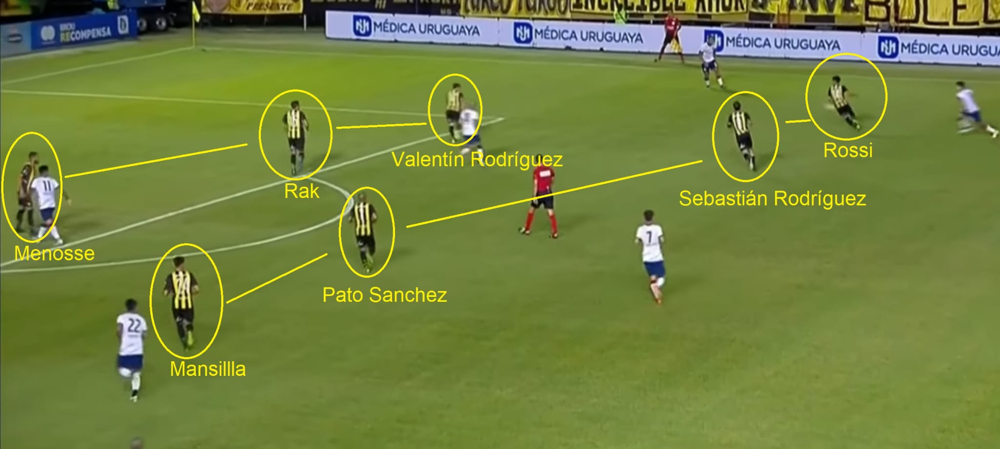

Club atletico Peñarol
Peñarol venció a San Lorenzo en el segundo amistoso de pretemporada del 2023 del Carbonero.
Peñarol venció a San Lorenzo en el segundo amistoso de pretemporada del 2023 del Carbonero. El gol Carbonero fue anotado en los últimos minutos por Oscar Cruz, el goleador histórico de nuestras juveniles.
Análisis del partido.

Formación :
Alfredo Arias planto una 4-3-3 bastante similar a la vista ante Estudiantes el pasado jueves 12.
Los cambios en el once fueron: Lima se puso los guantes debido a la triste perdida que sufrió Thiago el pasado lunes 16 cuando su hermano perdió la vida en un accidente de tránsito.
En la línea de 4 defensores no se vieron cambios, jugando con Menosse y Rak en la dupla de zagueros y los laterales fueron Valentín por izquierda y Milans por derecha.
En el mediocampo debutaron en Peñarol 2 fichajes del mercado de verano 2023; Carlos Sánchez y Sebastián Rodríguez. Estos fueron acompañados por Saravia.
La línea de 3 se paro como en un triangulo donde “Cachete” y Sebastián eran los que bajaban a recibir el balón hacía los zagueros. No era los 2 sino que a veces iba Saravia y en la otra ocasión el ex Emelec.
Mientras el Pato hacía una función bastante similar a la que realizo Kevin Méndez el pasado viernes (Kevin no disputo el encuentro ya que junto a Cristóforo, Aguirregaray y Ramos se quedaron acompañando a Thiago en ese momento tan duro para él) solo que más volcado a la derecha, teniendo muy buenas conexiones con Milans y Laquintana, que jugo de puntero derecho. Por izquierda estuvo Nico Rossi y de nueve el flamante fichaje del 2023, Abel Hernández.
Transcurso del partido:
El equipo de Arias se paro mucho más en campo enemigo que en el primer partido de la temporada, con los punteros jugando más por dentro para que ambos laterales se proyecten al ataque y puedan mandar centros. En este movimiento que Peñarol realizo durante casi todo el encuentro fueron claves los centrales y tanto Sebastián Rodríguez como Rodrigo Saravia que buscaban cambios de frente o pases a las espaldas de los defensores, muchas veces hacía afuera pero otras veces hacía los interiores.
Si bien este movimiento le salió en varias ocasiones al Aurinegro llegando a enviar busca pies o centros al área, pocas veces logro conectar de buena manera contra el arco. En el 1x1 resaltaremos más este aspecto.
San Lorenzo, que se paro con línea de 5 en el fondo no sufrió tanto con estos centros, aunque de igual manera Peñarol fue el que más tuvo la pelota y el que fue al frente.
Cuando San Lorenzo tenia la posesión saliendo desde el fondo, Peñarol se paraba 4-1-3-2, también como lo hizo ante el Pincha, solo que ya con los fichajes y quisa un equipo de menor calidad presiono de manera mas intensiva. Laquintana se paraba al lado de Abel contrario a lo que paso ante Estudiantes, cuando fue Méndez quien se paro junto al nueve en la presión. El “Pato” Sánchez tomo el lugar que había tenido Laquintana abriéndose contra la banda derecha y Rossi paso a ser volante por izquierda. Por ultima el “Seba” se paró de media punta y de cinco en solitario Saravia comenzando la línea defensiva.
Donde más complico San Lorenzo fue en las contras, donde logro llegar varias veces con peligro, en una causando una casi expulsión de Milans y en otra hasta teniendo un penal que no vio el árbitro, ya en el segundo tiempo.
En este segundo tiempo Peñarol realizo, como ante Estudiantes, varios cambios para dar minutos a los juveniles y también aprovecho a realizar cambios en la formación.
Laquintana se retiró del campo dejando lugar a Mansilla y Saravia salió por Bentancourt.
Con esto Arias planto una 4-4-2 con un doble cinco conformado por el “Pato” Sánchez y Sebastián Rodríguez y con dos nueves, Abel y “Cavanito”. Por último, Rossi y Mansilla jugaron por las bandas cambiando permanentemente entre derecha e izquierda.
Mansilla jugo más como interior llegando a parecer media punta por momentos. Rossi por el contrario jugo mucho más por fuera entrando al área desde ese sector o enviando centros. Es que en esto último se baso Peñarol en los últimos 45´, en enviar centros al área comandada por Batalla, arquero del “Cuervo”.
Hay más de 6 centros al área de San Lorenzo que logran ser conectados por Abel, Bentancourt o hasta por Laquintana. En general Peñarol tuvo claras intenciones de tratar de llegar por arriba.
Peñarol realizo 5 variantes más, todos pibes; Sánchez por Homenchenko, Milans por Ferreira, Rossi por Alonso, Valentín por Pablo López y Abel por Oscar Cruz. Ninguno cambio la manera de pararse de Peñarol, pero si dieron frescura a un “Manya” que por momentos parecía sin ideas permitiéndole llegar por el centro del campo.
Al final, en una gran jugada de Mansilla, Oscar Cruz, el goleador histórico de las formativas de Peñarol le dio el triunfo al “Aurinegro”. El segundo del 2023.
 
